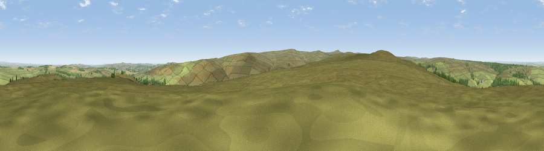

Viewpoint near Edmundbyers
#12714 in England · top 26% of its area beats it · near EdmundbyersThe view, rendered

A 360° render of this exact spot computed from the terrain model, tree cover and land cover — summer colours, afternoon light, calibrated against photographs of famous viewpoints. Real trees, hedges and buildings will differ in detail.
The panorama
Grey silhouette: terrain skyline in each direction (720 bearings, Earth curvature and refraction included). Dashed green: skyline with trees (+15 m) and buildings (+8 m) as obstacles. Blue strip: how far the ground is visible on each bearing.
Where the view opens
Wedge length = distance to the farthest visible ground on that bearing (vegetation-aware). Rings at 10, 25 and 50 km.
What fills the view
92% grassland · 4% woodland · 3% cropland ·
Angular shares of the visible panorama (visual magnitude), not map area. Landscape diversity 0.15 (0–1 Shannon).
Key numbers
More beautiful places nearby
The staircase of upgrades: each row has a higher view potential than everything closer. Driving times are estimates from straight-line distance, calibrated against real road routing — check an actual route before setting out.
| Place | Direction | Drive | Score |
|---|---|---|---|
| Viewpoint near Edmundbyers | NE · 1 km | ~2 min | 61.3 |
| Bainbridge Hill | WSW · 1 km | ~3 min | 66.7 |
| Viewpoint near Slaley | N · 4 km | ~10 min | 69.8 |
| Viewpoint near Rookhope | SSW · 6 km | ~12 min | 70.0 |
| Viewpoint near Rookhope | SW · 7 km | ~14 min | 70.4 |
| Collier Law | SSE · 9 km | ~18 min | 71.7 |
| Pontop Pike | E · 15 km | ~27 min | 77.8 |
| Little Dun Fell | WSW · 34 km | ~52 min | 78.4 |
54.84908, -2.00425 · source: screening · position refined by local search. Computed location — check access rights before visiting.